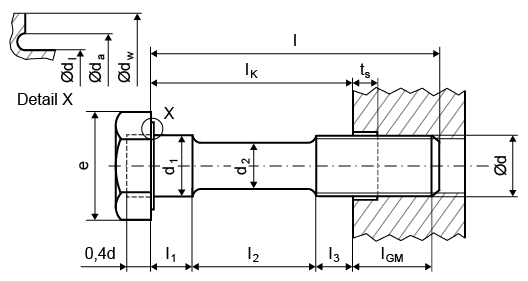

|
|
|


螺栓数据
螺栓的类型、几何形状、表面粗糙度和强度等级都可以定义为螺栓数据。
您可以使用数据库中的以下标准螺栓描述来定义螺栓类型：
| DIN EN ISO 4762 | 内六角圆柱头螺钉 |
| DIN 7984 | 内六角低圆柱头螺钉 |
| 标准螺纹 M3.0 至 M24.0 | |
| DIN EN ISO 4014 | 带杆六角头螺钉（原 DIN 931 T1） |
| DIN EN ISO 4017 | 不带杆六角头螺钉（原 DIN 933） |
| DIN EN ISO 1207 | 开槽圆柱头螺钉 |
| DIN EN ISO 8765 | 带杆六角头螺钉，米制细牙螺纹 (A B) |
| 细牙螺纹 M8.0 至 M64 | |
| DIN EN ISO 8676 | 不带杆六角头螺钉，米制细牙螺纹 (A B) |
| 细牙螺纹 M8.0 至 M64 | |
| DIN EN 1662 | 带法兰六角头螺钉，轻型系列 F 型 |
| 标准螺纹 M5.0 至 M16 | |
| DIN EN 1662 | 带法兰六角头螺钉，轻型系列 U 型 |
| 标准螺纹 M5.0 至 M16 | |
| DIN EN 1665 | 带法兰六角头螺钉，重型系列 F 型 |
| 标准螺纹 M5.0 至 M20 | |
| DIN EN 1665 | 带法兰六角头螺钉，重型系列 U 型 |
| 标准螺纹 M5.0 至 M20 | |
| ASME B18.2.1 | 方头螺栓，UNC 螺纹，0.25 至 1.5in |
| ASME B18.2.1 | 六角螺栓，UNC 螺纹，0.25 至 4in |
| ASME B18.2.1 | 重型六角螺栓，UNC 螺纹，0.5 至 3in |
| ASME B18.2.1 | 六角头螺钉，UNC 螺纹，0.25 至 3in |
| ASME B18.2.1 | 重型六角螺钉，UNC 螺纹，0.5 至 3in |
您可以为公称直径输入自己的值，或者在输入工作数据后点击“尺寸计算”按钮计算近似值。该尺寸计算功能通常会导致螺栓直径过大。因此，我们建议您输入一个比系统建议值小 1 或 2 个标准尺寸的值。
如果您输入自己的螺栓几何形状，则可以输入任意螺栓长度。否则，在您输入螺栓长度后，系统会将其设置为下一个标准长度。
表面粗糙度会影响嵌入量，因此也会影响螺栓连接的预紧力损失。
输入标准强度等级后，您可以点击 按钮来定义自己的强度值。剪切强度比根据 VDI 2230 Sheet 1 (2015) 中的表 5.5/2，按强度等级进行设置。这些值可以覆盖。
要定义自己的螺栓几何形状，您必须将 列表框设置为 。这会激活 Plus 按钮，您可以点击该按钮输入自己的螺栓几何形状值。

图 42.8：螺栓几何形状
常规选项卡： 如果使用带内孔的螺栓，请同时输入螺栓头部尺寸和内孔直径。
螺纹选项卡：来自标准的数据、螺纹尺寸、螺距和螺纹长度。此处可定义用于计算中径 d2 和底径 d3 的系数 (d2 = d - d2factor*P; d3 = d - d3factor*P)。
螺栓光杆选项卡：关于单个螺栓横截面的数据。点击 Plus 按钮添加新的横截面。点击  按钮移除所选横截面。点击
按钮移除所选横截面。点击  按钮删除所有横截面。
按钮删除所有横截面。
Bolt data
A bolt's type, geometry, surface roughnesses and strength class can all be defined as bolt data.
You can use the following standard bolt descriptions from the database to define the bolt type:
| DIN EN ISO 4762 | Hexagon socket head cap screw |
| DIN 7984 | Hexagon socket head cap screw with low head |
| Standard thread M3.0 to M24.0 | |
| DIN EN ISO 4014 | Hexagon headed screw with shank (formerly DIN 931 T1) |
| DIN EN ISO 4017 | Hexagon headed screw without shank (formerly DIN 933) |
| DIN EN ISO 1207 | Slotted cheese head screw |
| DIN EN ISO 8765 | Hexagon headed screw with shank, metric fine thread (A B) |
| Fine thread M8.0 to M64 | |
| DIN EN ISO 8676 | Hexagon headed screw without shank, metric fine thread (A B) |
| Fine thread M8.0 to M64 | |
| DIN EN 1662 | Hexagon headed screw with flange, light series form F |
| Standard thread M5.0 to M16 | |
| DIN EN 1662 | Hexagon headed screw with flange, light series form U |
| Standard thread M5.0 to M16 | |
| DIN EN 1665 | Hexagon headed screw with flange, heavy series form F |
| Standard thread M5.0 to M20 | |
| DIN EN 1665 | Hexagon headed screw with flange, heavy series form U |
| Standard thread M5.0 to M20 | |
| ASME B18.2.1 | Square bolts, UNC thread, 0.25 to 1.5in |
| ASME B18.2.1 | Hex bolts, UNC thread, 0.25 to 4in |
| ASME B18.2.1 | Heavy hex bolts, UNC thread, 0.5 to 3in |
| ASME B18.2.1 | Hex cap screws, UNC thread, 0.25 to 3in |
| ASME B18.2.1 | Heavy hex screws, UNC thread, 0.5 to 3in |
You can either input your own value for the nominal diameter or click the Sizing button to calculate an approximate value after you input the operating data. This sizing function usually leads to bolt diameters that are too large. We therefore recommend you input a value that is 1 or 2 standard sizes less than the system's proposed value.
You can input any bolt length if you are inputting your own bolt geometry. Otherwise, after you input the bolt length, the system sets it to the next standard length.
The surface roughnesses influence the amount of embedding and therefore also the preload loss of the bolted joint.
After the entry for standard strength grades you can click the button to define your own strength values. The shearing strength ratios are set according to Table 5.5/2 in VDI 2230 Sheet 1 (2015), according to strength class. The values can be overwritten.
To define your own bolt geometry, you must set the selection list to . This activates the Plus button, which you can click to input your own bolt geometry values.
Figure 42.8: Bolt geometry
General tab: If you are using a bolt with a bore, input the bolt head dimensions as well as the bore diameter.
Thread tab: Data from the standard, the size of the thread, the pitch, and the thread length. This is where you define the factors used to calculate the flank diameter d2 and the core diameter d3 (d2 = d - d2factor*P; d3 = d - d3factor*P).
Bolt shank tab: Data about individual bolt cross sections. Click on the Plus button to add a new cross section. Click the button to remove the selected cross section. Click on the button to delete all the cross sections.